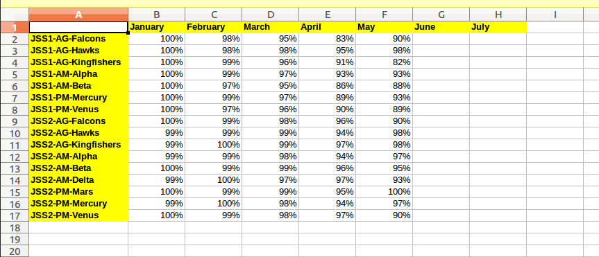

How to add a new XLS report¶
We’re going to demonstrate how to add an XLS report with a table for listing the streams in a school year (rows) and the attendance rate for each stream in each month (columns).
We’re going to assume that we’re working on a made-up SchoolTool package called schooltool.myreport with three empty files:
__init__.py
configure.zcml
report.py
Note
You can find the code of the schooltool.myreport package in Launchpad.
Let’s first add a root directive and namespaces we’re going to need in configure.zcml:
<?xml version="1.0" encoding="utf-8"?>
<configure xmlns="http://namespaces.zope.org/browser"
xmlns:zope="http://namespaces.zope.org/zope"
xmlns:i18n="http://namespaces.zope.org/i18n"
xmlns:flourish="http://schooltool.org/flourish"
xmlns:report="http://namespaces.schooltool.org/report"
i18n_domain="schooltool.myreport">
</configure>
The first step when a view component is designed is to decide its “context”. It’s usually a persistent object in the database and it’s referenced as the context attribute of the view components. You want the context to be as narrow as practical. In this case we’ll use the SchoolYear object, because we know each report will be limited to a selected year. Other common reports use Person as a context, or use Group or Section as a context to iterate over the members of a group.
Then we need to register a “link” in ZCML to create a HTML link in the user interface for accessing the report. For school year reports, and other common contexts, there’s already a component (YearReportsLinks) in charge of handling those links and there is a special directive for registering them (report:reportLink). Inside the <configure></configure> element of configure.zcml add:
1<report:reportLink
2 name="attendance_report"
3 class=".report.AttendanceReportLinkViewlet"
4 manager="schooltool.report.browser.report.YearReportsLinks"
5 permission="schooltool.edit"
6 group="School Year"
7 title="Attendance demo report"
8 description="This is a sample attendance report"
9 file_type="xls"
10 link="request_attendance_report.html”
11/>
Let’s explain this directive line by line:
The
reportLinkdirective comes from thereportnamespace (see themeta.zcmlfile in theschooltool.reportpackage) and it’s handled by theschooltool.report.meta.reportLinkDirectivefunction.A unique name is used to register the link component in the app’s component registry.
We use a custom class for rendering the link. We’ll add this class later. The component we’re implementing in this step is called a
viewlet(in charge of rendering a piece of HTML in a specific place in the page).The manager is a component that filters the viewlets, for example, by permission, and prepares them for rendering.
Permission refers to an existing permission in the system.
The
groupis used to attempt to generate useful links on the report overview page, which lists all the reports registered on the system. In general this maps to the context.Title is the text used in the user interface for the link to the report.
The description the report is used in the request dialog of the report. We’ll add this dialog later.
Filetype is also used for the request dialog of the report.
The link is a view name that references the request dialog of the report. You’ll see how the link implementation accesses this attribute and concatenates it with the year’s full URL
We close the empty directive
Now let’s implement the link class. All this component does is to render the right path for the request dialog for the school year. In the report.py module add:
from zope.traversing.browser.absoluteurl import absoluteURL
from schooltool.app.browser.app import ActiveSchoolYearContentMixin
from schooltool.report.report import ReportLinkViewlet
class AttendanceReportLinkViewlet(
ReportLinkViewlet, # renders the report link
ActiveSchoolYearContentMixin # set the schoolyear attribute
):
@property
def report_link(self):
schoolyear_url = absoluteURL(self.schoolyear, self.request)
return '%s/%s' % (schoolyear_url, self.link)
Then let’s register and implement the request_attendance_report.html view for the school year referenced in the previous step. First we register it:
<flourish:page
name="request_attendance_report.html"
for="schooltool.schoolyear.interfaces.ISchoolYear"
class=".report.AttendanceReportRequestView"
permission="schooltool.edit"
/>
Then we implement the request dialog view. In this case this is a simple class with just an attribute pointing to the name of the component that will render the XLS report. In more advanced cases this dialog can also become a form and react dynamically to user inputs:
...
from schooltool.export.export import RequestXLSReportDialog
...
class AttendanceReportRequestView(
RequestXLSReportDialog # renders the request dialog
):
report_builder = 'attendance_report.xls'
Request dialog views in SchoolTool create and schedule Celery tasks that run the XLS or PDF reports as background jobs.
Now let’s register and implement the attendance_report.xls view. Again registration comes first:
<flourish:page
name="attendance_report.xls"
for="schooltool.schoolyear.interfaces.ISchoolYear"
class=".report.AttendanceReportView"
permission="schooltool.edit"
/>
We are going to break the implementation up to make it more understandable. First we subclass the base view for XLS reports:
...
from schooltool.export.export import ExcelExportView
...
class AttendanceReportView(ExcelExportView):
pass
The context for our view is a SchoolYear object. We can add a property for making things easier to understand:
@property
def schoolyear(self):
return self.context
For getting the months in the school year, first we need to query its terms. Here we sort them by starting date and add them as a “lazy” property (that’s only calculated once):
...
from zope.cachedescriptors.property import Lazy
...
@Lazy
def terms(self):
return sorted(self.schoolyear.values(), key=lambda term: term.first)
Then we’ll add a months property. Months will be represented as an ordered dictionary with its keys being (year, month_name) combinations and its values being sets of school day dates. We’re going to reuse a component for calculating the school days in a month and a function for parsing ISO-8601 “YYYY-MM-DD” strings:
...
from collections import OrderedDict
from schooltool.common import parse_date
from schooltool.term.browser.term import TermRenderer
...
@Lazy
def months(self):
result = OrderedDict()
for term in self.terms:
for month_data in TermRenderer(term).calendar():
year = month_data['year']
month_name = month_data['month']
month_key = year, month_name
if month_key not in result:
result[month_key] = set()
dates = set()
for week_data in month_data['weeks']:
for day_data in week_data['days']:
if day_data.get('date') is not None:
dates.add(parse_date(day_data['date']))
result[month_key].update(set(dates))
return result
Now we need to convert the dates in each month into “meetings”. We could have done this in a single step, but we split it for clarity:
...
from schooltool.lyceum.journal.browser.journal import (
makeSchoolAttendanceMeeting
)
...
@Lazy
def meetings_by_month(self):
result = OrderedDict()
for month_key, dates in self.months.items():
result[month_key] = [
makeSchoolAttendanceMeeting(date)
for date in dates
]
return result
Since this is an attendance report for students we need to get the score system used in the Student Attendance view. We can do it like this:
...
from schooltool.app.interfaces import ISchoolToolApplication
from schooltool.lyceum.journal.interfaces import (
IJournalScoreSystemPreferences
)
...
@Lazy
def scoresystem(self):
app = ISchoolToolApplication(None)
journal_preferences = IJournalScoreSystemPreferences(app)
return journal_preferences.student_scoresystem
The next step is to determine which “sessions” are enabled in the system and get requirement factories for them:
...
from schooltool.lyceum.journal.interfaces import IAttendanceOptions
from schooltool.lyceum.journal.journal import StudentAMRequirement
from schooltool.lyceum.journal.journal import StudentPMRequirement
...
@Lazy
def requirement_factories(self):
result = []
app = ISchoolToolApplication(None)
attendance_options = IAttendanceOptions(app)
if attendance_options.students_am_enabled:
result.append(StudentAMRequirement)
if attendance_options.students_pm_enabled:
result.append(StudentPMRequirement)
return result
Now, we’ll call our requirement factories for each meeting in each month to get “requirement” objects (used to retrieve evaluations):
...
@Lazy
def requirements_by_month(self):
result = OrderedDict()
for month_key, meetings in self.meetings_by_month.items():
result[month_key] = []
for factory in self.requirement_factories:
for meeting in meetings:
requirement = factory(meeting)
result[month_key].append(requirement)
return result
Next, we need access to all the streams in the year, so we can add a property for getting the StreamContainer object:
...
from schooltool.stream.interfaces import IStreamContainer
...
@Lazy
def streams(self):
return sorted(IStreamContainer(self.schoolyear).values(),
key=lambda stream: stream.title)
Now, let’s add a method for calculating the attendance rate of a stream in a given month. We’re going to use the same key (year, month_name) we’ve been using to represent a month:
...
from schooltool.requirement.interfaces import IEvaluations
from schooltool.requirement.scoresystem import UNSCORED
...
@Lazy
def not_present_scores(self):
ss = self.scoresystem
not_present_scores = ss.tag_absent + ss.tag_excused + ss.tag_skip
# returned as a dictionary for faster look up
return dict.fromkeys(not_present_scores)
def stream_attendance_rate(self, stream, month_key):
month_requirements = self.requirements_by_month[month_key]
count = 0
present = 0
for student in stream.members:
evaluations = IEvaluations(student)
for requirement in month_requirements:
score = evaluations.get(requirement, None)
if score is not None and score.value is not UNSCORED:
count += 1
if score.value not in self.not_present_scores:
present += 1
if count:
return present / float(count)
Now, let’s make the report “callable” by adding a __call__ method. This is the method that will get called by the Zope framework when the report is requested:
...
import xlwt
...
def __call__(self):
workbook = xlwt.Workbook()
self.build_report(workbook)
return workbook
We create a Workbook object from the xlwt library, pass it to the build_report method that we’re going to code later and that is going to modify its contents, and finally return it so that the report machinery extracts its data and make it downloadable (by attaching it to a persistent Message object).
Finally let’s add our build_report method:
We’re going to add a sheet to the workbook titled “Attendance report”
We’re going to print the names of the months in the first row, starting on the second column
We’re going to print the names of the streams in the first column, starting on the second row
We’re going to traverse each stream, then we’re going to traverse each month to finally get the attendance rate for that stream in that month
This method looks like this:
def build_report(self, workbook):
# add a sheet with a title to the workbook
worksheet = workbook.add_sheet(u'Attendance report')
# print the name of the months in the first row
# starting on the second column
row = 0
col = 1
for key, dates in self.months.items():
year, month_name = key
self.write_header(worksheet, row, col, month_name)
col += 1
# print the name of the streams in the first column
# starting on the second row
row = 1
col = 0
for stream in self.streams:
self.write_header(worksheet, row, col, stream.title)
row += 1
# traverse each stream
# then traverse each month
# finally print the attendance rate for that stream in that month
# use percentages in the cell values
row = 1
for stream in self.streams:
col = 1
for i, month_key in enumerate(self.months):
self.write(
worksheet,
row,
col + i,
self.stream_attendance_rate(stream, month_key),
format_str='0%'
)
row += 1
The report would look like this:
